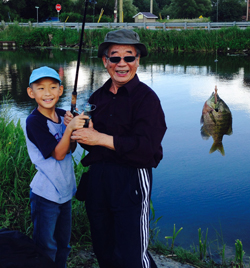

Ronald caught a fish!
My Very First Fishing Experience
Science Superstar Camp
Baking Workshop
My Pizza Making Experience
My Ideal Pet
Halloween Night
My dad loves fishing. He sometimes catches big fish, sometimes he doesn’t, but keeps telling me it’s fun. Every time I saw him going fishing, I asked if I could go. But my mom said I was too young. Now I am 9 years old. So when my dad asked me if I wanted to go fishing, I jumped and shouted “yes”. And finally my mom said I could go.
My dad, my grandpa, my uncle Lee and I went fishing together on the Saturday afternoon before civic holiday. On our way to the river it was cloudy. I thought it would rain, but my grandpa said when it rains, the fish eat more, which is a good sign. After we got to the river, it was cool and the water was kind of dirty. Then I set up the fishing pole with my dad and he taught me how to cast the bait, how to hook the hook into the fish’s mouth. You will know if a fish is biting the bait because the floater will dip. Then you pull up the fishing rod with strength and wind the handle right after. If you can wind it forward with ease, don’t continue because there is nothing on the bait. Only continue if you feel something fighting. Once you pull the fish out of the water, do whatever you want to do with it – cut it up and put it as bait, or go home and cook it.
My exciting moment came when I felt a fish pulling. But I was also scared that the line would break. Actually I did not care if the line would break. I just kept winding because I wanted to catch my first ever fish. Luckily the line did not break and I caught a big sunfish. I also know why they are called sun fish. They are round and yellow, like the sun – the sun is circular, the sunfish’s body is kind of circular, the sun is bright yellow, and the sunfish is also bright yellow. I was lucky enough that I caught another sunfish.
My uncle Lee caught 5 fish, my grandpa caught 3 fish, I caught 2 fish, and my dad caught none. I really enjoyed fishing. I will go fishing again.
[ ∧ ]
I enjoyed my science superstar camp. I did 4 chemical experiments. I also had many other types of fun, but these experiments were the most interesting things that I want to share with you.
My first experiment is about making a fake volcano, which has some bubbly substance when it erupts. Our teacher gave us a cup made of styrofoam. I filled it with baking soda. Then I poured in some vinegar. Some type of bubbly substance came rushing out. It was really fun. It is called "Volcano Experiment".
My second experiment is cool because it involves an egg in a box falling from 20 inches high. We use popsicle sticks to build a box, tape a piece of cotton to the bottom of the box, put the egg into the box and then drop the box with the egg inside from 20 inches high. If the egg breaks, you try again. If the egg doesn't break, you succeed. Only 2 people succeeded out of 12. I was one of them. My egg didn't break because I stretched the cotton ball, so the cotton cushioned the egg's fall. Everyone else would have to retry. This experiment is called "Falling Egg".
In my third experiment we made very strong bubbles out of 6 materials. Then we blew the bubbles and caught them. We all attempted to put a feather in them. No one succeeded. I almost did it. When I was just going to let go of my feather, my bubble popped. It is called "Feathery Bubble".
My fourth experiment is making an Oopy Goopy. Oopy Goopy is a bouncing object. What you need for Oopy Goopy is borax and glue. It is not the glue from the glue stick. It is liquid glue. Then mix the borax and glue. If you want, add food coloring. After you mix for about 10 minutes, let it dry for 20 minutes. If you want it bouncier, add more borax. If you want it bigger, add more glue. If you want to make an Oopy Goopy, follow my instructions and enjoy it.
On my last day, we had arts and crafts, like making and popping a balloon with erasers inside, and making masks. We also went to the gym. There, we whacked a piñata with nothing inside, just to see who broke it first. At the end of the day, we got our beads. I got one bead per day. On the last day, I got the rest of the beads.
All the beads have their values. The star bead means you are in science camp. The white bead with the YMCA symbol on it means you are in YMCA camp. The red bead is caring. The blue bead is healthy. The purple bead is honesty. The yellow bead is inclusiveness. The orange bead is responsibility. The glow-in-the-dark bead is sun safety. The sparkly bead is friendship. The silver bead is leadership, and the gold bead is excellence. I can't believe I got both gold and silver for the first time. I had so much fun and I hope I can go back there again.
[ ∧ ]
Have you ever dreamed of turning a Minion into a cupcake? We are doing it right now.
Here is what you need to make the Minion cupcake – a cupcake, yellow fondant, white fondant, gray fondant, black fondant, cutting tools, a box, and a rolling pin. Now let's get down to work.
First, get the rolling pin and the yellow fondant, and roll it out. Get the big cutting tool and cut a circle. That is Minion's yellow face. Next, get your white fondant and use the rolling pin and roll it out again. Take the small cutting tool and cut two circles. Put a little bit water on the two circles. Put the watery sides on the yellow face as Minion's eyes. After that, take the gray fondant and roll it out. Cut a circle first, and then use the smaller cutter to cut a hole in the first circle, making the first goggle. Repeat the same process to make the second goggle. Where are the pupils? Take the black fondant and cut really small circles. Apply them to the bottom of the white eyes, making the eyes look down. Then take the goggles and put them on the white eyes.
The Minion is bald. Why don't you give it some hair? Cut three short rectangular strips out of the black fondant and apply them to the top of the head. "Mmmf, mmmf…" The Minion can’t speak. Give him a mouth. Use a curved cutter and cut a smile. Then apply it about 3cm under the eyes.
Now your Minion's face is finished. I hope you like your Minion's face. Put your Minion's face on the cupcake. Here are the very simple baking instructions. Preheat the oven to 350 degrees Celsius. Put your cupcake in. Bake for 20 minutes. When time is up, take your cupcake out, and enjoy!
[ ∧ ]
Baking is epic. You can bake whatever food you like. My first really fun baking experience was making a cupcake. A few weeks later I learned to bake a pizza.
I was so excited to learn to make a pizza because I love eating pizza so much. I like the taste of the crust, the toppings, the cheese, and the tomato sauce. I just can't have enough. For example, in the evening after karate class, I sometimes asked for pizza even though I had my dinner and I was not hungry. But seeing the pizza store next to my karate school, I couldn't resist the temptation, and I would say "I am hungry".
I made a pizza with my friend Chayse. We kneaded the dough, flattened it, sprinkled some flour, and rolled it. We added tomato sauce first and then added three toppings – cheese, tomatoes, and mushrooms. We baked it for about half an hour. Every now and then we slided the big pizza tool under the pizza, so it didn’t blacken. I was wondering if our pizza came out good. It didn't come out good. It came out AWESOME! Chayse didn't want the 2 slices. He gave them to me. I ate them all. I just can't have enough!
That was my first and best time making pizza.
[ ∧ ]
My ideal pet is a hamster. I always wanted a hamster. My dad finally got one for me as my birthday gift. So we went to a pet store where I saw many different types of hamsters. I picked the white one with tan spots because I liked the color. I also saw a grey one which is a dwarf hamster. A dwarf hamster is more aggressive. So I didn't choose it because I don't want to be bitten or scratched. I also saw another one which is white with dark orange spots, but I didn't choose it because of its red eyes.
Hamsters are nocturnal. That is why I see him sleeping in the day and active in the night. He likes running on his wheel and climbing the cage bars. When he sleeps, his nose is facing the cave entrance. I also noticed he piles up his bedding in front of his cave door to block the light.
I enjoy feeding Hammy. I have been feeding him water melon, tomato, green veggie, and his own food. When I feed him juicy fruits and veggie, he eats really fast. When he eats on his own, he shoves many pieces of food into his mouth and stores there. Then he spits them out in his cave.
My dad cleans the cage about once a week, and Hammy stays in a transparent ball and walks around in there and explores the house, but also bumps into many things. Once he even bumped off the lid!!! My mom caught him in time and put him back safely in his cage.
[ ∧ ]
Halloween is fun! You can go trick or treat by wearing costume like a vampire or a ghost. You also need a bag, or a bucket, or a basket. If you want, you can make it Halloweenish. Then you knock on the doors and get candies. The candies I got last year were Smarties, Aero chocolate, KitKat, Coffee Crisp, lollipops, Juicy Drop Pops. The candies are all multicolored and the one I like best is Juicy Drop Pop. And, you can scare people by standing at their door. When you hear the door unlocking, you get ready to scream "Boo!" right after they open the door. I did that, and it scared the person who came to the door.
[ ∧ ]